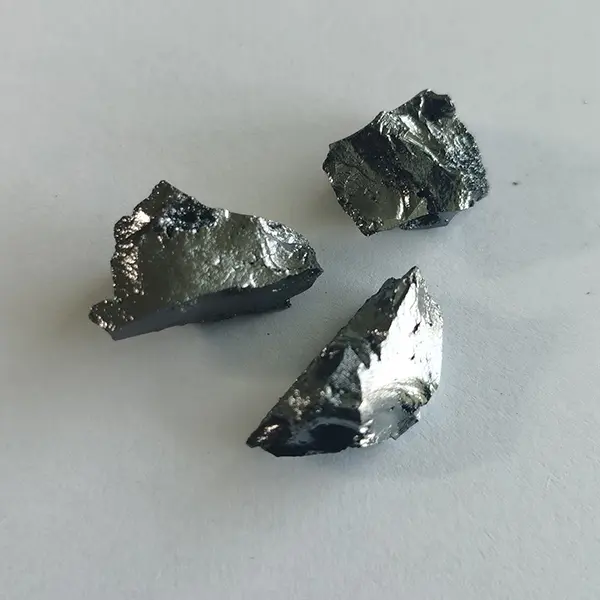
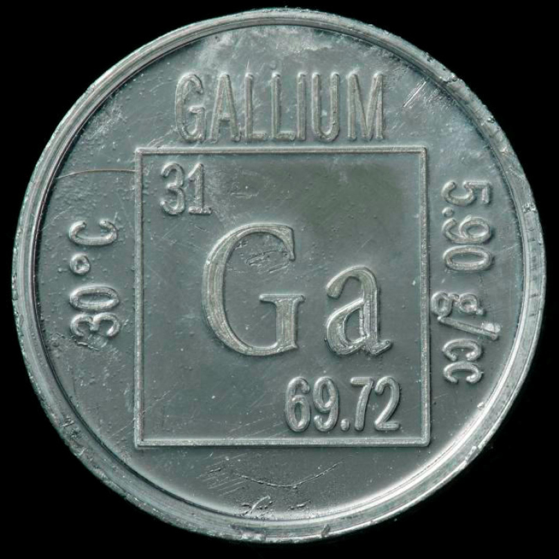

Галлий
Га́ллий (химический символ — Ga, от лат. Gallium) — химический элемент 13-й группы (по устаревшей классификации — главной подгруппы третьей группы, IIIA), четвёртого периода периодической системы химических элементов Д. И. Менделеева, с атомным номером 31.Простое вещество галлий — это мягкий хрупкий металл серебристо-белого (по другим данным светло-серого) цвета с синеватым оттенком.

Существование галлия («экаалюминия») предсказал в начале 1870-х гг. Д. И. Менделеев, он также описал некоторые свойства этого элемента. В 1875 г. П.-Э. Лекок де Буабодран спектральным методом обнаружил галлий в цинковой руде, выделил его в виде металла и некоторых соединений; новый элемент назвал в честь своей родины Галлия (древне-римское название территории Франции).
Сырьём для производства галлия служат бокситы, некоторые цинковые и другие руды, содержание галлия в которых доходит до 1–2 % по массе. Например, 1 кг галлия можно получить из отходов, образующихся при промышленном производстве около 50 т алюминия. Галлий выделяют из растворов (в которых Ga концентрируется после выделения Al) электролизом на ртутном катоде. Образовавшуюся при этом амальгаму Na и Ga разлагают водой и из полученного раствора извлекают Ga, например электролизом. Для получения галлия высокой чистоты используют зонную плавку и направленную кристаллизацию. Объём мирового производства около 43·104 кг/год (2021).

Соединения галлия, обладающие полупроводниковыми свойствами (например, GaP, GaAs, GaSb), находят применение в электронике (изготовление полупроводников и лазерной техники). Для галлия характерен самый большой из всех химических элементов интервал между температурами плавления и кипения (около 2200 °C), поэтому его используют для изготовления высокотемпературных (до 1000 °C) термометров. Синтетический гадолиний-галлиевый гранат используют в качестве лазерного материала и подложек для эпитаксиальных плёнок, сплавы галлия – для изготовления предохранителей противопожарных устройств.